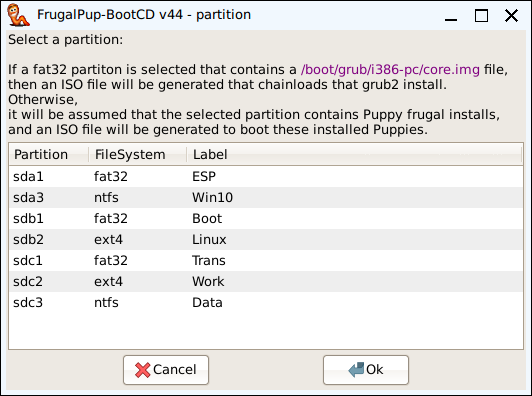

FrugalPup - the package FrugalPup - the package
FrugalPup - the package FrugalPup - the packageFrugalPup is all about doing frugal installs of Puppy linux, and managing multiple frugal installs.
The FrugalPup package contains a number of CLI backend scricpts that actually do it, and some GUI scripts, for ease of use.
The main GUI script is, of course, the FrugalPup application itself.
But there are also some companion GUI scripts that provide simple, minimal optioned, installers.
The current companion simple Puppy frugal installers are:
StickPup
The simplest and most restricted installer, that formats and installs a single Puppy to a usb stick, in a single "fat32" partition.
f2StickPup
Formats and installs a single Puppy to a usb stick, in a small "fat32" partition and a large Linux "f2fs" partition.
e3StickPup
Formats and installs a single Puppy to a usb stick, in a small "fat32" partition and a large Linux "ext3" partition.
e4StickPup
Formats and installs a single Puppy to a usb stick, in a small "fat32" partition and a large Linux "ext4" partition.
DiskPup
Does no partitioning or formating; The drive will need to already be partitioned and formatted.
Installs a single Puppy linux in a selected directory, and the boot loader (Grub2) in a selected "fat32" partition.
The Puppy linux directory can be on the same partition as the boot loader, or on a different partition.
The easiest way to allow Puppy Linux to boot on a uefi computer is to disable Secure Boot in UEFI/firmware.
If Secure Boot is enabled, every boot has to be authenticated with a key.
The key for Puppies installed with FrugalPup is not installed in the UEFI/firmware by the computer manufacturer.
But it is installed by FrugalPup as the file puppy.cer in the root directory of the "fat32" install partition.
It is necessary to use the Enroll key from disk option of MOK manager, on this file, once.
A screen providing an option to run MOK manager will be shown before the Grub2 menu, whenever it is needed.
Once the Puppy MOK has been "enrolled", subsequent boots of any Puppy installed by FrugalPup should proceed directly to the Grub2 menu.
DiskPup and FrugalPup require an install partition and a boot partition to be available, before they can be used.
If appropriate partitions do not exist, they can be setup using 'GParted'.
Install partition:
The Puppy files for each frugal install reside in their own sub-directory on this large partition. Also, the Puppy "save" mechanism is usually written to this sub-directory.
It is preferable to format this partition with a "Linux" filesystem, e.g. "ext4" on a HD or SSD, "f2fs" on a usb stick or SD card.
Boot partition:
The bootloader, "Grub2" (approximately 10MiB), is installed in this small bootable "fat32" partition.
It does not need to be on the same device as the install partition.
On a "uefi" computer, it can be the same "fat32" partition as the ESP (Efi System Partition), installed by some other Operating System, e.g. Windows,
but it's usually more straight-forward if it's not, even if it's on a small USB stick.
This is usually the first partition on the device that UEFI/firmware is configured to boot.
Use 'GParted' to ensure that the 'boot' flag is set for this partition, and the 'esp' flag if it is available.
A simple approach, is to install Puppy to a usb device using a layout like that generated by f2StickPup,
e.g. a small "fat32" partition and a large linux partition on the rest of the drive.
Of course other partitions could be defined on the same device, if required.
One useful other partition is a 'linux-swap' partition that is at least as big as your physical RAM.
FrugalPup - the applicationFrugalPup is meant to install and manage multiple Puppy frugal installs, so it has a number of facilities rather than a single wizard.
To install 2 Puppies, you would use the Puppy facility twice to setup the 2 install directories, and then use the Boot facility once to setup the boot loader for these 2 Puppies.
FrugalPup is meant to provide control over all aspects of the install, so it contains a number of dialogs to allow specification of things that might be rarely needed.
To make the use of FrugalPup as easy as possible, a number of these "advanced" dialogs are disabled by default, but can be enabled with the Settings facility.
This structure also provides other opportunities, like:
Use the Puppy facility to update a Puppy install directory after a new version of the iso is released.
Use the Boot facility to create a usb stick that can boot the Puppies installed on the hard drive.
Use the BootCD facility to create a CD that can boot installed Puppies on a machine that can't boot a usb device.
View this page with "defaulthtmlviewer".
"Edit" settings in the config file, "/root/.config/frugalpup.conf".
The primary use of this facility is to copy the relevant files from the source Puppy to the install directory.
But it also contains some dialogs that collect information for use by the Boot facility, simply because the Puppy facility is run for each Puppy installed.
Whereas the Boot facility might be run only once to cater for many Puppies.
These dialogs are referred to as the "optional advanced dialogs", and can be individually enabled or disabled via the Settings facility.
Setup the Grub2 boot loader to boot the selected Puppy install directories on a selected "fat32" partition.
If the selected Puppy directory is the actual install directory of a particular Puppy, a single Grub2 boot entry will be generated just for that Puppy.
If the selected directory is the parent of a number of Puppy install directories, Grub2 boot entries will be generated for all the Puppies in the sub-directories.
These Grub2 boot entries support 2 optional "initrd" files, 'ucode.cpio' and 'local-initrd.gz', as well as the standard 'initrd.gz'.
If the selected boot partition is an existing ESP (Efi System Partition), installed by some other Operating System, e.g. Windows or another Linux distribution,
FrugalPup takes steps to avoid overwriting the existing "boot" definition.
It stores the Puppy Grub2 files so that it should be possible to dual-boot with the other Operating System via the machines UEFI/firmware "Boot Menu".
FrugalPup must be running on a Puppy that supports a working 'efibootmgr' utility, to setup the dual-boot.
On the "Boot type" screen, options are provided to specify which of the uefi grub2 copies to install, 'ueif64', 'uefi32' or both.
Most uefi computers will expect 'uefi64' to be installed, but there are some that require 'uefi32'.
FrugalPup has always contained both copies of uefi grub2, and until version 37, it always installed both.
Apart from the slight saving in disk space, this only makes a real difference if grub2 is being installed to an ESP on a machine that requires 'uefi32'.
In that case, provided 'uefi32' is selected, 'bootia32.efi' will be specified in the UEFI/firmware boot entry instead of 'bootx64.efi'.
Options are also provided to skip the install of Grub2, and change only the main 'grub.cfg' file,
either by replacing it, or by appending boot entries to it.
If 'append' is not selected, a new 'grub.cfg' is generated.
FrugalPup does not attempt to generate a "Windows" boot entry. Instead, the files in '/var/local/otherinstalls.d' are processed in sort order.
It is assumed that these files contain Grub2 boot enteries that FrugalPup does not generate, i.e. anything that is not a Puppy frugal install.
So the contents of these files are included in the generated 'grub.cfg'.
A separate utility, "OtherInstalls" can be used to create boot entries in '/var/local/otherinstalls.d/boot-entries' for some things, including "Windows".
Create a non-uefi bootable ISO file.
If you select a "fat32" partition that contains a Grub2 installation, as installed by the Boot facility,
the resultant CD/DVD will contain only grub4dos configured to chainload the Grub2 on the selected partition.
This CD/DVD should continue to work as long as there is a Grub2 installed on the selected partition, no matter how many changes are made to the 'grub.cfg' on the selected partition.
If some other partition is selected,
it will be assumed that the partition contains Puppy Linux frugal installs, as installed by the Puppy facility,
and the resultant CD/DVD will contain Grub2 configured to boot the selected Puppy Linux frugal installs from the selected partition.
This CD/DVD will work only as long as all the current Puppies remain installed in their current locations.
Both provide an alternate boot capability to machines that cannot boot from usb.